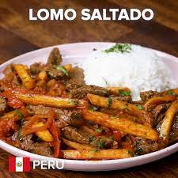

Lomo Saltado

Ingredients
- 2 tablespoons vegetable oil, divided
- 1 lb sirloin steak, cut into strips
- salt, to taste
- black pepper, to taste
- 1/2 red onion, sliced
- 1 medium tomato, sliced
- 2 cloves garlic, minced
- 1 tablespoon aji amarillo paste
- 2 tablespoons soy sauce
- 1 tablespoon white
- 1 tablespoon fresh cilantro, chopped
- 1 lb french fries, cooked, hot
- white rice, cooked, for serving, optional
Preparation
- Heat 1 tablespoon of oil in a large pan over high heat. Add the steak, season with salt and pepper, and cook until browned, 5-6 minutes. Remove from the pan.
- Heat the remaining tablespoon of oil in the same pan, then add the red onion and cook for about 5 minutes, until softened and browned. Add the tomato, garlic, and aji amarillo paste, and cook for another 5-7 minutes, until the tomatoes have released some of their juices, but are still intact.
- Add the soy sauce and vinegar and stir to combine, let cook for 1 minute.
- Add the steak, fries, and cilantro. Toss gently to coat the fries in the sauce.
- Enjoy!